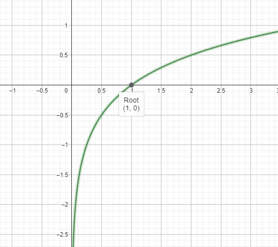
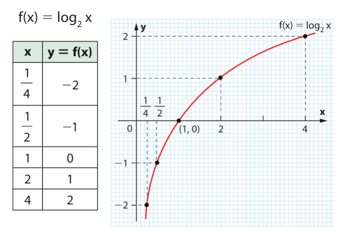

Sobre Logaritmos, confesso que senti bastante dificuldade de entender, mas após algumas aulas e um pouco de estudo em casa consegui entender o conteúdo de forma razoável.
Me diga, a que número x é necessário elevar o número 2 para obter 8? Se você disse 3, acabou de calcular um logaritmo.
Logaritmos são os números que precisamos elevar X para obter Y. Seu formato é o seguinte: loga b = c
Neste conteúdo foram estudados os seguintes conteúdos:
Os logaritmos tem algumas Propriedades Operatórias:
loga (M ⋅ N) = loga M + loga N
loga (M : N) = loga M - loga N
loga MN = N ⋅ loga M
logb N = (logaN) : (logab)
Com estas propriedas podemos fazer cálculos usando logaritmos.
O contrário da função exponencial de base a (ax) é loga x. Um exemplo de função logarítmica pode ser: f(x) = log2 x.
Aqui um exemplo de gráfico logarítmico, sendo a função do gráfico log4 x:
Como podemos observar, o gráfico não tem pontos nos quadrantes I e III do gráfico e ele sempre passa pelo eixo X no ponto x = 1.
E para montar um gráfico de uma função logarítmica, é igual a função exponencial, basta marcar alguns pontos e traçar uma linha:
